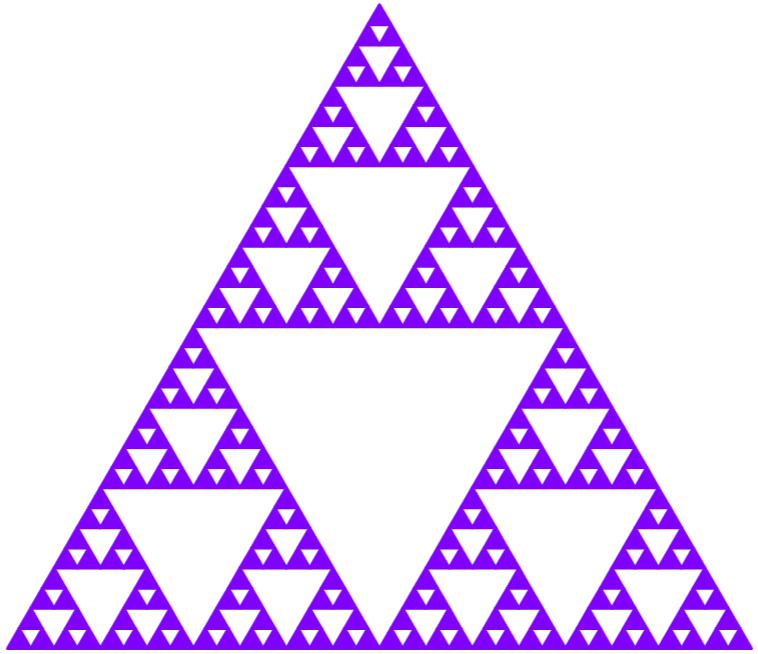
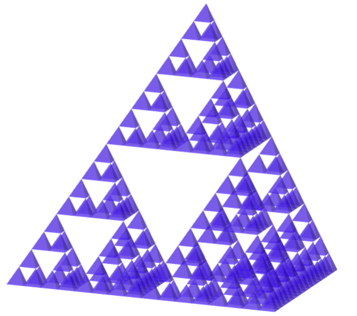
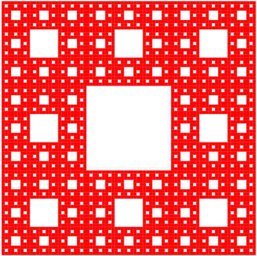

Instituto Federal do Espírito Santo
Licenciatura em Matemática • Educimat
Professor Alex Jordane
Fractais de Sierpinski
Roteiro de Construção no GeoGebra por Homotetia e Iteração Recursiva
Este material apresenta um roteiro prático e conceitual para a construção de fractais clássicos de Wacław Sierpiński utilizando o software de geometria dinâmica GeoGebra: o Triângulo de Sierpinski, a Pirâmide de Sierpinski e o Tapete de Sierpinski.
O texto explora como transformações geométricas de homotetia, combinadas ao achatamento estrutural de listas aninhadas (Nivelar) e a processos recursivos controlados por parâmetros dinâmicos (ControleDeslizante e Iteração), permitem modelar e visualizar a autossimilaridade característica da geometria fractal.

Triângulo de Sierpinski (2D)
Pirâmide de Sierpinski (3D)
Tapete de Sierpinski (2D)Estrutura do Material
Capítulo 1 — Triângulo de Sierpinski
Construção passo a passo a partir de um triângulo equilátero inicial $t_1$ de vértices $A=(0,0)$, $B=(2,0)$ e $C=(1,\sqrt{3})$:
- Estudo detalhado dos parâmetros operacionais do comando
Homotetia(<Objeto>, <Razão>, <Ponto Central>)com fator $0{,}5$. - Formalização matemática do comando
Nivelar($\operatorname{Nivelar}(\mathcal{L}_{\text{aninhada}})$) para linearizar listas hierárquicas a cada etapa. - Generalização recursiva com
ControleDeslizante(0, 6, 1), comandoIteraçãoe cores dinâmicas no modelo HSV.
Capítulo 2 — Pirâmide de Sierpinski
Extensão espacial (Tetraedro de Sierpinski) na Janela de Visualização 3D do GeoGebra a partir de uma pirâmide regular $p_1$ de vértices $A, B, C, D$, aplicando 4 homotetias simultâneas de razão $0{,}5$ centradas nos vértices ($n \in \{0, 1, 2, 3, 4\}$):
Capítulo 3 — Tapete de Sierpinski
Construção recursiva a partir de um quadrado inicial $q_1$ de vértices $A, B, C, D$, aplicando 8 homotetias de razão $\frac{1}{3}$ centradas nos 4 vértices e nos 4 pontos médios dos lados ($n \in \{0, 1, 2, 3\}$):